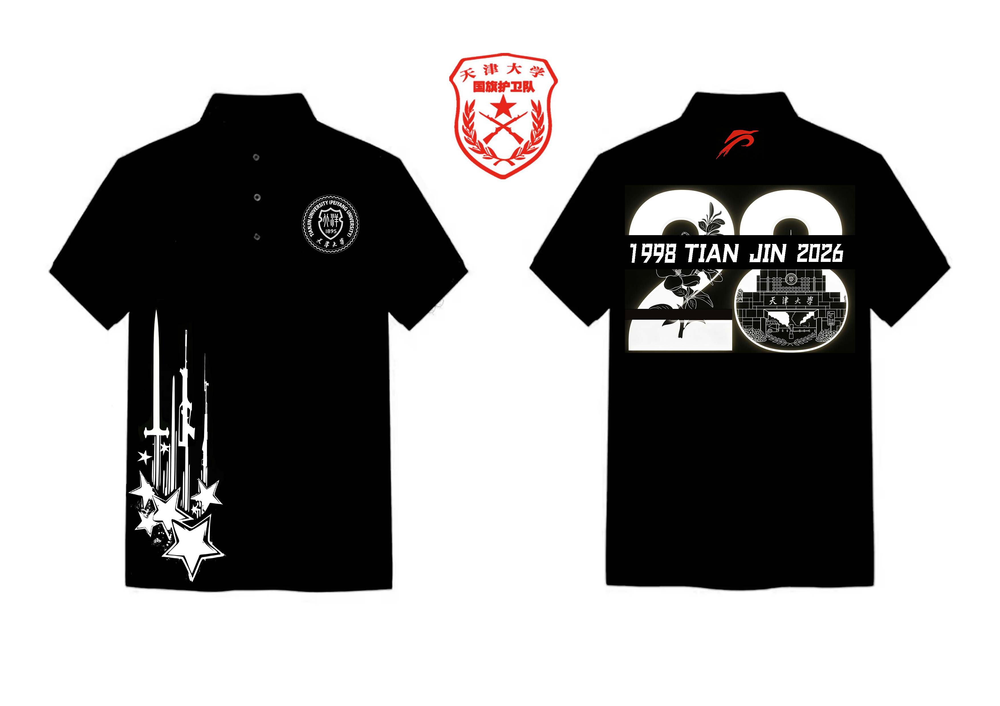

队衫设计 2

设计说明：
一、正面设计
左胸校徽：白色天津大学校徽置于黑底之上，既是对“实事求是”校训的铭记，也象征队员们扎根北洋 沃土，以学子之身肩负护旗使命。
左下侧纹样：以白色线条勾勒指挥刀与枪械剪影，搭配红色五角星与星点装饰，既呼应国旗护卫队的仪 仗职责与专业素养，也寓意队伍在五星红旗的照耀下成长，传承爱国初心。
二、背面设计 1.核心数字“28”：左侧“2”融入天大标志性海棠花线稿，承载着校园春日的诗意与生机，彰显天大 人的人文情怀；
右侧“8”嵌入天津大学标志性建筑线稿，诉说百年学府的厚重底蕴，强化“校荣 我荣”的归属感。
2.时间文字：“1998 TIAN JIN 2026”以硬朗字体居中排列，清晰标注队伍成立与本次纪念的时间节 点，见证28载风雨兼程。
3.领口标识：红色队标寓意国护队员昂扬向上的精神风貌，怀揣理想与担当，守护国旗、逐梦前行。 三、整体 黑底搭配白、红双色，庄重沉稳且视觉对比强烈，既符合仪仗队服的肃穆感，又通过细节传递“爱国、 爱校、守纪、担当”的队训精神，让每一位队员身着队服时，都能感受到“护我国旗、扬我国威、爱我 天大”的责任与荣耀。
一、正面设计
左胸校徽：白色天津大学校徽置于黑底之上，既是对“实事求是”校训的铭记，也象征队员们扎根北洋 沃土，以学子之身肩负护旗使命。
左下侧纹样：以白色线条勾勒指挥刀与枪械剪影，搭配红色五角星与星点装饰，既呼应国旗护卫队的仪 仗职责与专业素养，也寓意队伍在五星红旗的照耀下成长，传承爱国初心。
二、背面设计 1.核心数字“28”：左侧“2”融入天大标志性海棠花线稿，承载着校园春日的诗意与生机，彰显天大 人的人文情怀；
右侧“8”嵌入天津大学标志性建筑线稿，诉说百年学府的厚重底蕴，强化“校荣 我荣”的归属感。
2.时间文字：“1998 TIAN JIN 2026”以硬朗字体居中排列，清晰标注队伍成立与本次纪念的时间节 点，见证28载风雨兼程。
3.领口标识：红色队标寓意国护队员昂扬向上的精神风貌，怀揣理想与担当，守护国旗、逐梦前行。 三、整体 黑底搭配白、红双色，庄重沉稳且视觉对比强烈，既符合仪仗队服的肃穆感，又通过细节传递“爱国、 爱校、守纪、担当”的队训精神，让每一位队员身着队服时，都能感受到“护我国旗、扬我国威、爱我 天大”的责任与荣耀。